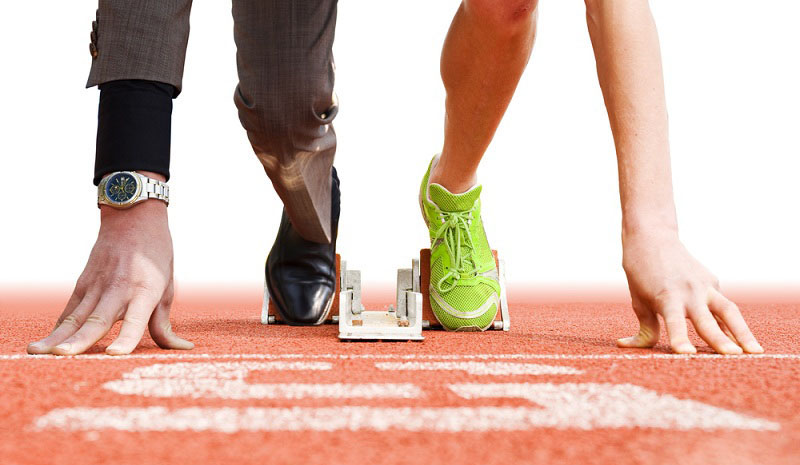

¿Es el Deporte un Trabajo?
El deporte como trabajo genera un debate amplio e interesante. Si bien representa una oportunidad de desarrollo profesional, también enfrenta desafíos importantes, como la falta de apoyo económico, la desigualdad de género y el acceso limitado a recursos para muchos deportistas. En este espacio, te invitamos a unirte al diálogo. Analizaremos preguntas clave como: ¿Qué se necesita para que el deporte sea una carrera sostenible? ¿Cómo pueden las instituciones, empresas y gobiernos apoyar a quienes trabajan en este sector? ¿Qué cambios son necesarios para mejorar las condiciones laborales de los trabajadores deportivos? Comparte tus ideas, experiencias y opiniones para enriquecer esta discusión colectiva.
